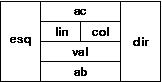
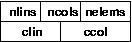
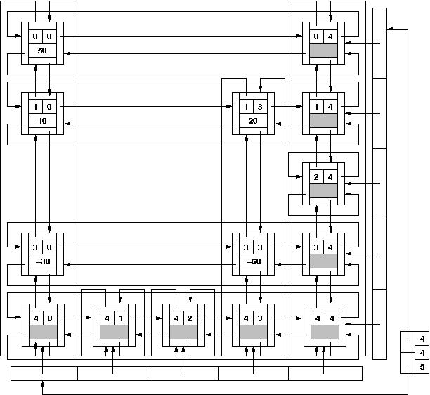

O objetivo desta tarefa é treinar o uso da representação de matrizes esparsas usando listas ortogonais.
A representação está definida no arquivo matrizes.h e difere da estrutura descrita em aula e na seção 3.5 da apostila. O tipo elemento representa um elemento não-nulo da matriz. Além do valor val e dos índices lin e col, cada elemento possui apontadores para o nó anterior e para o nó seguinte na mesma linha e na mesma coluna, como representado abaixo. Em outras palavras, são usadas listas duplamente ligadas circulares com nós cabeça. Um elemento pode ser representado esquematicamente pela figura seguinte:

O tipo matriz é a representação da matriz esparsa. Ele inclui as dimensões nlins (número de linhas) e ncols (número de colunas) da matriz original, a contagem nelems de elementos não nulos, e dois vetores de apontadores, clin e ccol, respectivamente para as cabeças das linhas e das colunas. Os vetores devem ser alocados dinamicamente e seus tamanhos são, respectivamente, nlins+1 e ncols+1, pois incluem as listas das cabeças das linhas e das colunas. Os elementos das linhas e das colunas são numerados a partir de 0 (como em C). Um nó do tipo matriz pode ser representado esquematicamente pela figura seguinte:

Os elementos não nulos de cada linha são ligados pelos apontadores dir e esq de modo a formar lista circular com cabeça. Da mesma forma, os elementos de cada coluna são ligados pelos apontadores abaixo (ab) e acima (ac). As cabeças das colunas também são ligadas entre si, como se elas formassem a linha de índice nlins. As cabeças das linhas igualmente formam uma coluna de índice ncols. Estas duas listas compartilham o mesmo nó super-cabeça clin[nlins] = ccol[ncols].
(Os nós cabeça estão à direita e embaixo.)
É fornecido o programa principal e o esqueleto de um módulo (matrizes) que define a estrutura de dados acima, e as operações com matrizes. Sua tarefa é completar a implementação do módulo matrizes, preenchendo os lugares marcados com "!!!COMPLETAR".
O programa principal é um interpretador de comandos que opera sobre as matrizes A, B, C e D. Os significados dos comandos estão listados abaixo:Os testes estão classificados em quatro grupos, sendo que cada grupo corresponde a um conjunto de rotinas.
z X nlin ncol inicializa matriz X de nlin linhas e ncol colunas, identicamente nula; l X libera espaço ocupado pela representação da matriz X; r X inicializa e lê a matriz X, desde que suas dimensões e elementos sejam fornecidos da seguinte forma: w X imprime a matriz X a X lin col val atribui val a X[lin, col] v X lin col imprime (verifica) o valor de X[lin, col] s X Y Z Z recebe a soma de X e Y m X Y Z Z recebe o produto de X e Y t X Y Y recebe a transposta de X x encerra interpretação # linha de comentário.
O objetivo desta representação é evitar o armazenamento e manipulação explícita dos elementos nulos. Portanto, em momento algum durante a execução de um programa, poderá existir na representação um elemento com valor nulo.
A eficiência da implementação é importante. Em particular, note que o procedimento atribui contém uma malha para localizar o elemento na linha, e seu custo é proporcional ao número de elementos na mesma. Portanto, insere_elem (que tem custo constante) deve ser usado, sempre que possível, em vez de atribui. Veja le_matriz, por exemplo.
Não é permitido modificar a interface (arquivo matrizes.h).
Se desejar, pode declarar rotinas auxiliares na parte marcada do arquivo matrizes.c.
A fim de facilitar a verificação de gerenciamento de memória dinâmica, é fornecido o pacote balloc que contém funções especiais para alocar e desalocar memória. Estas operações devem ser realizadas utilizando-se as funções (macros) MALLOC e FREE, em lugar das funções habituais malloc e free. O programa principal invoca, ao final da execução, a função bapply(bprint) que verifica se existe alguma área de memória dinâmica que deixou de ser liberada. Caso exista, é impressa a localização do comendo que a alocou. A sua implementação não pode utilizar as operações habituais de alocação.
O arquivo tudo.zip contêm todos os testes e seus resultados, bem como os arquivos principal.c, matrizes.h e uma versão incompleta de matrizes.c, além do pacote balloc.
Deve ser submetido somente o arquivo matrizes.c.